Approximate Nearest Neighbors: IVF, Product Quantization (PQ) & HNSW Graphs
Once a Two-Tower Bi-Encoder maps $N = 100{,}000{,}000$ documents into $d = 768$-dimensional float32 embeddings, storing the raw vectors requires $307.2\text{ GB}$ of RAM, and an exact linear scan ($O(Nd)$ floating-point operations) takes seconds per query. Approximate Nearest Neighbor (ANN) indexes trade a tiny, controlled fraction of exact overlap (e.g., $98\%$ Recall@10 instead of $100\%$) for $50\times\text{--}200\times$ lower latency and up to $64\times$ lower memory. This chapter derives and traces the three foundational pillars of modern vector databases (FAISS, Pinecone, Milvus, Qdrant, Vespa): Inverted File Indexes (IVF), Product Quantization (PQ), and Hierarchical Navigable Small World (HNSW) graphs.

1. Problem Formulation: Candidate Discovery vs. Score Approximation
Given a corpus of $N$ stored vectors $\mathcal{X} = \{x_1, \dots, x_N\} \subset \mathbb{R}^d$, an eligibility filter $E(q) \subseteq \{1, \dots, N\}$, and a query vector $q \in \mathbb{R}^d$, exact top-$K$ nearest-neighbor search returns the $K$ eligible items with smallest distance $d(q, x_i)$ (or largest similarity):
When vectors are $\ell_2$-normalized ($\|q\|_2 = \|x_i\|_2 = 1$), squared Euclidean distance and cosine similarity induce the exact same ranking because:
To break the $O(Nd)$ time and $4Nd$-byte memory wall of brute-force search (IndexFlatL2 / IndexFlatIP), an ANN index modifies one or both axes of the search:
- Non-Exhaustive Candidate Discovery (IVF, Trees, LSH, HNSW): Partition or wire the vector space so a query inspects only a candidate shortlist $C(q) \subset \mathcal{X}$ of size $|C(q)| \ll N$. Error enters when a true top-$K$ neighbor is omitted from $C(q)$.
- Lossy Vector Compression (Product Quantization, Scalar/Binary Quantization): Compress each $4d$-byte vector into a compact $M$-byte code $\hat{x}_i = q(x_i)$ and estimate distances $\hat{d}(q, x_i) \approx d(q, \hat{x}_i)$ without reconstructing full float32 coordinates. Error enters through quantization distortion $\|x_i - \hat{x}_i\|_2$.

nprobe Voronoi cells, PQ compresses each vector into $M$ single-byte centroid IDs scored via Lookup Tables (ADC), and HNSW routes queries through a multi-layer skip-list proximity graph in $O(\log N)$ hops.2. Inverted File Index (IVF): Voronoi Partitioning & Multi-Probe Lookup
An Inverted File Index (IVF)—such as FAISS's IndexIVFFlat—uses $k$-means clustering at training time to partition $\mathbb{R}^d$ into $C = \text{nlist}$ Voronoi cells around learned coarse centroids $\{\mu_1, \dots, \mu_C\} \subset \mathbb{R}^d$. Each centroid $\mu_c$ owns an inverted posting list $L_c$ containing all corpus vectors whose nearest centroid is $\mu_c$:
- Offline Indexing: Each document vector $x_i$ is assigned to its closest coarse centroid $c^*(x_i) = \arg\min_c \|x_i - \mu_c\|_2^2$ and appended to posting list $L_{c^*}$.
- Online Querying: Given query $q$, the coarse quantizer computes $d(q, \mu_c)$ for all $C$ centroids, selects the $\text{nprobe}$ closest centroids, and scans only the vectors inside those $\text{nprobe}$ posting lists.

nprobe = 1 cell returns $P_1$ ($d^2=0.89$); increasing to nprobe = 2 scans $L_1$ and recovers $P_2$.Why Single-Cell Lookup (nprobe = 1) Misses Boundary Neighbors
In high dimensions, the volume of a convex Voronoi polytope concentrates near its boundary facets rather than near its centroid. When a query $q$ lands near the perpendicular bisector between two cells, its true nearest neighbor frequently sits on the opposite side of that boundary. The official diagrams from Pinecone's FAISS Vector Indexes guide illustrate how nprobe controls this boundary effect:
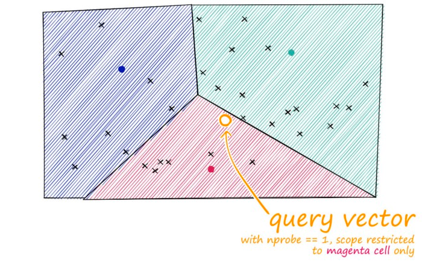
nprobe = 1 inspects only the magenta cell and misses closer vectors sitting just inside the adjacent teal cell.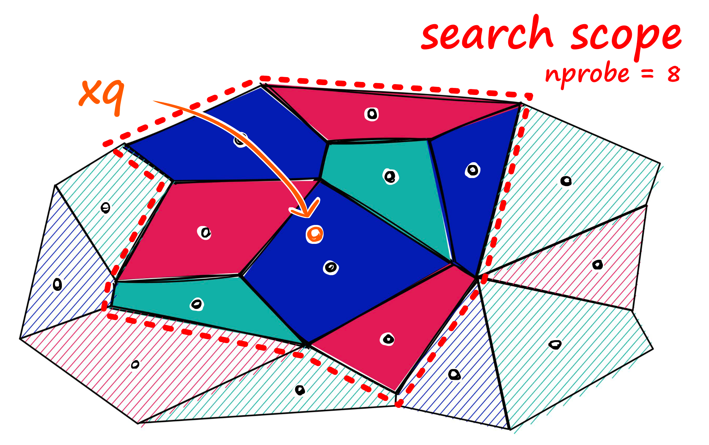
nprobe from $1$ (left) to $8$ (right) expands the search scope across neighboring Voronoi cells, capturing true nearest neighbors across cell bisectors at the cost of scanning more posting lists.Optimal Centroid Count $C = \text{nlist}$ and the List Imbalance Factor $\hat{\beta}$
If all $C$ posting lists are perfectly balanced ($|L_c| = N / C$), a query with probe count $P = \text{nprobe}$ performs:
For a fixed target recall requiring a constant fraction $\alpha = P / C$ of cells to be probed, total evaluations are $C + \alpha N$. If instead $P$ is fixed (e.g., $P = 32$), setting $\frac{\partial}{\partial C}(C + PN/C) = 1 - PN/C^2 = 0$ yields $C^* = \sqrt{P N}$ (typically $C \in [\sqrt{N},\, 4\sqrt{N}]$, such as $C = 4{,}096$ for $N = 10\text{M}$). For very large $C$ (e.g., $C = 65{,}536$), FAISS replaces the flat coarse scan with an HNSW graph over the $C$ centroids (IndexIVF with an HNSW coarse quantizer), reducing coarse routing from $O(C)$ to $O(\log C)$.
In real corpora, cluster sizes are skewed. Jégou et al. (2011) quantify this skew via the imbalance factor $\hat{\beta} \ge 1$:
When all lists have equal length $N/C$, $\hat{\beta} = 1$. If a dense topic cluster packs $10\%$ of the corpus into one cell, $\hat{\beta}$ spikes and any query probing that cell suffers $10\times$ higher tail latency.
3. Product Quantization (PQ): Subspace Decomposition & Fast LUTs
IndexIVFFlat reduces query compute, but it still stores uncompressed float32 vectors ($100\text{M} \times 768 \times 4\text{ B} = 307.2\text{ GB}$). Why can't we simply run $k$-means on the full $d$-dimensional vectors and store a single centroid ID per vector? Because representing $d = 128$ or $768$ dimensions with low distortion requires an astronomical number of centroids (e.g., $K = 2^{64} \approx 1.84 \times 10^{19}$), which would take zettabytes of memory just to store the codebook!
Product Quantization (PQ) (Jégou, Douze, & Schmid, 2011) solves this by decomposing the $d$-dimensional space into the Cartesian product of $M$ orthogonal subspaces, each of dimension $d^* = d / M$:
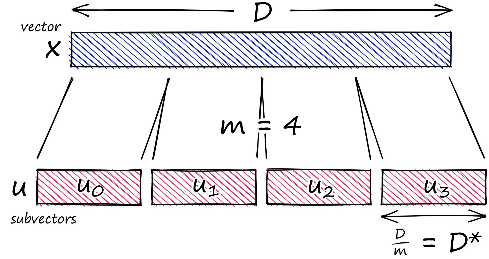
Inside each subspace $m \in \{1, \dots, M\}$, we train an independent $k$-means codebook $\mathcal{C}_m = \{c_{m, 0}, \dots, c_{m, K^*-1}\} \subset \mathbb{R}^{d/M}$ with $K^* = 2^{n_{\text{bits}}}$ centroids (standardly $n_{\text{bits}} = 8 \implies K^* = 256$). Each sub-vector $x^{(m)}$ is mapped to its nearest subspace centroid index:
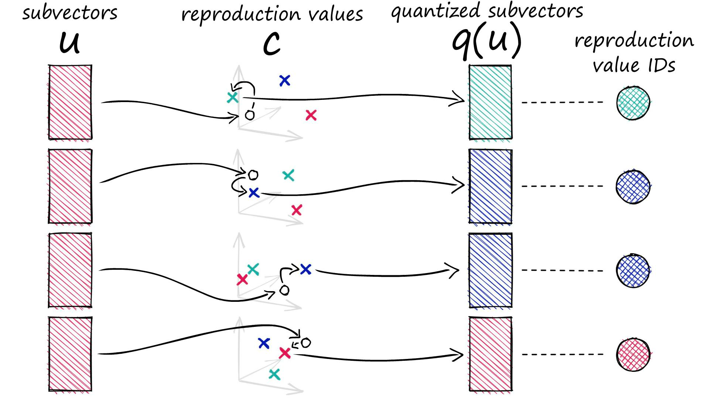
Look at the combinatorics of this Cartesian product codebook $\mathcal{C} = \mathcal{C}_1 \times \mathcal{C}_2 \times \dots \times \mathcal{C}_M$:
- Codebook Storage: Storing $M$ separate codebooks of $K^* = 256$ centroids of width $d/M$ requires only $M \times 256 \times (d/M) \times 4\text{ bytes} = 1{,}024\,d\text{ bytes}$ (for $d=128$, just $128\text{ KB}$—fitting easily in L2 CPU cache!).
- Implicit Centroids: Those $M=8$ codebooks of size $256$ implicitly define $(K^*)^M = 256^8 = 1.84 \times 10^{19}$ distinct quantized vectors in $\mathbb{R}^{128}$.
- Vector Compression: A $128$-d float32 vector ($512\text{ bytes}$) becomes an $8$-byte PQ code ($64\times$ reduction); a $768$-d float32 vector ($3{,}072\text{ bytes}$) with $M=64$ becomes a $64$-byte PQ code ($48\times$ reduction).
Symmetric (SDC) vs. Asymmetric Distance Computation (ADC)
At query time, how do we compute the squared Euclidean distance between a query $q \in \mathbb{R}^d$ and millions of $M$-byte PQ codes without decompressing each code back into float32? Jégou et al. define two schemes:
- Symmetric Distance Computation (SDC): Also quantize the query $q \mapsto \hat{q}$ and sum precomputed inter-centroid distances $\sum_{m=1}^M \|c_{m, \text{code}_m(q)} - c_{m, \text{code}_m(x)}\|_2^2$. This suffers from double quantization error (on both $q$ and $x$).
- Asymmetric Distance Computation (ADC — Standard in Production): Keep the single query vector $q$ in exact uncompressed float32, and precompute an $M \times K^*$ Distance Lookup Table (LUT) once per query:
$$\text{LUT}[m, k] = \bigl\|q^{(m)} - c_{m, k}\bigr\|_2^2 \qquad \forall m \in \{1, \dots, M\},\; k \in \{0, \dots, 255\}.$$Building the LUT costs only $K^* \cdot d = 256\,d$ FLOPs once per query. Then, scoring any compressed corpus vector $x_i$ requires just $M$ table lookups and $M-1$ additions (or SIMD
pshufb/ AVX2 gather instructions):$$\hat{d}_{\text{ADC}}(q, x_i)^2 = \sum_{m=1}^{M} \text{LUT}\bigl[m,\, \text{code}_m(x_i)\bigr].$$For Inner Product / Cosine search, $\text{LUT}[m, k] = \langle q^{(m)}, c_{m, k}\rangle$ works identically by linearity of the dot product!
Composite IndexIVFPQ: Quantizing Residuals Inside Voronoi Cells
In production (IndexIVFPQ), IVF and PQ are combined: coarse $k$-means partitions the space into $C$ Voronoi cells, and PQ encodes the residual offset vector $r(x_i) = x_i - \mu_{c^*(x_i)}$ rather than the raw vector $x_i$:
Because every vector in cell $V_c$ is already close to $\mu_c$, the residual $r(x_i)$ has much smaller variance (energy) than $x_i$. All $8$ bits per subspace are spent resolving fine local displacements around $\mu_c$ rather than re-encoding which global region of $\mathbb{R}^d$ the point came from.

IndexIVFPQ, IVF restricts search to the nprobe Voronoi cells nearest to $x_q$, and PQ scores only the compressed residual codes inside those cells.4. HNSW: Hierarchical Navigable Small World Graphs
When memory allows storing the graph structure and the service requires sub-5ms tail latency at $97\%\text{--}99.5\%$ Recall@10 without a global $k$-means training phase, HNSW (Malkov & Yashunin, 2018) is the default index in Qdrant, Weaviate, Milvus, OpenSearch, pgvector, and FAISS (IndexHNSWFlat). HNSW unifies two classical data structures:
Idea 1: Probability Skip Lists (Multi-Scale Express Layers)
A skip list (Pugh, 1990) accelerates $O(N)$ linked-list search to $O(\log N)$ by stacking hierarchical layers of linked lists. Layer $0$ contains every element; each higher layer $\ell$ contains a randomly promoted subset of layer $\ell-1$ with long-range "express" pointers. Search starts at the top layer, advances as far as possible without overshooting the target, and drops down one layer to refine the search.
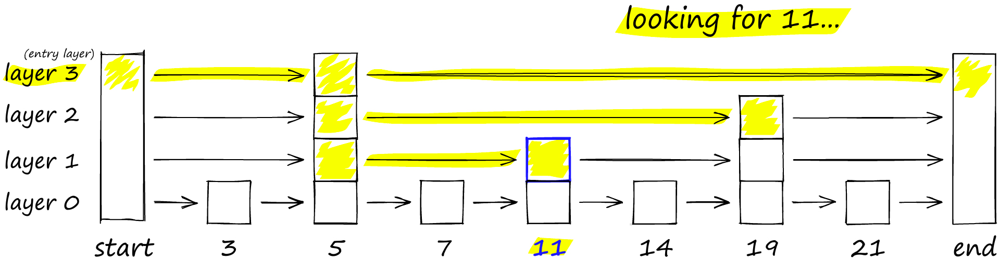
Idea 2: Navigable Small World (NSW) Proximity Graphs
Unlike 1D sorted keys in a skip list, high-dimensional vectors have no total ordering. Instead, a Navigable Small World (NSW) graph connects each vector $v$ to nearby neighbors (forming a local Delaunay-like mesh) plus long-range edges across the space. Starting at an entry point, greedy routing repeatedly hops to the connected neighbor closest to query $q$ until no neighbor improves the distance:
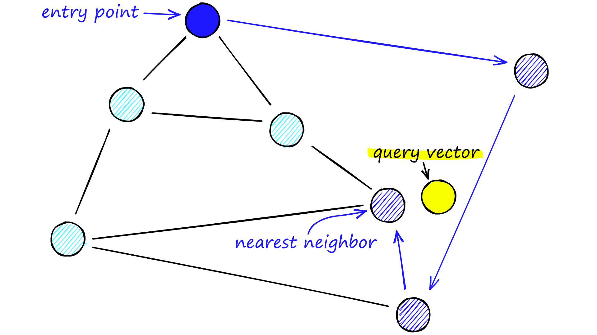
Combining Both: The Multi-Layer HNSW Architecture
In single-layer NSW, hub nodes accumulate both long-range and short-range links, forcing the search to evaluate many neighbors at every step. HNSW separates links by characteristic scale across layers $\ell \in \{0, 1, \dots, L\}$:
- Layer $0$ (Base Layer): Contains all $N$ vectors with dense, short-range local connections (up to $M_{\max0} = 2M$ edges per node).
- Layers $1 \dots L$ (Upper Routing Layers): Contain exponentially smaller nested subsets of the same vectors (up to $M_{\max} = M$ edges per node). Because nodes in Layer $\ell$ are sparse, connecting a node to its nearest neighbors within Layer $\ell$ automatically creates long-range "highway" edges!
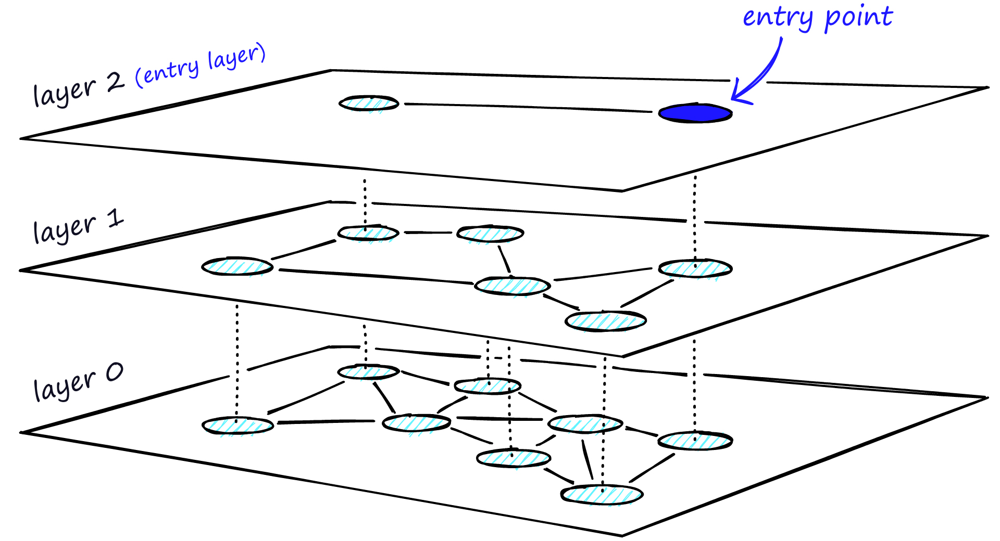
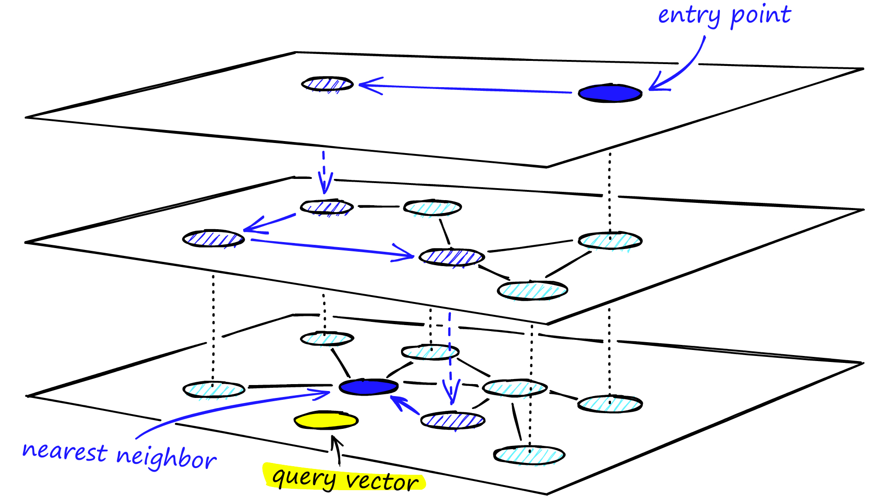
ef = 1 from the top entry point down to Layer $1$, followed by wider beam search with queue capacity efSearch at Layer $0$.Exponential Layer Promotion Law & Degree Caps
When inserting a new vector, HNSW samples $U \sim \operatorname{Uniform}(0, 1)$ and assigns its maximum layer $\ell$ via an exponentially decaying distribution scaled by the level multiplier $m_L$:
Because $P(\ell \ge j) = P\bigl(U \le e^{-j / m_L}\bigr) = e^{-j / m_L}$, setting $m_L = 1 / \ln M$ yields a clean geometric progression in $M$:
Consequently, the expected number of layer memberships per vector across the entire hierarchy is $\sum_{j=0}^{\infty} M^{-j} = \frac{M}{M - 1}$ (for $M = 16$, just $\frac{16}{15} \approx 1.0667$ layers per vector—meaning upper layers add only $\sim 6.7\%$ extra graph overhead!).

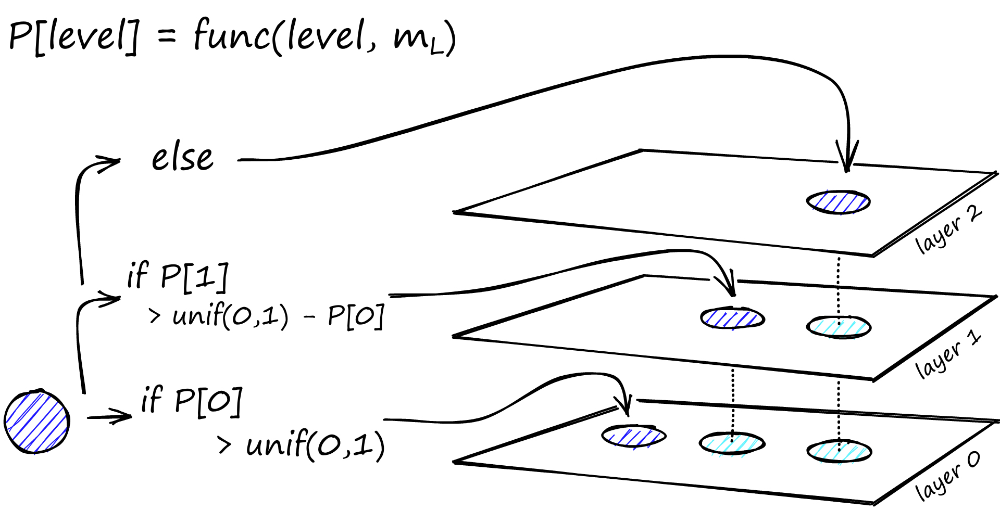
ef = 1 during insertion solely to locate a nearby entry point at layer $\ell$.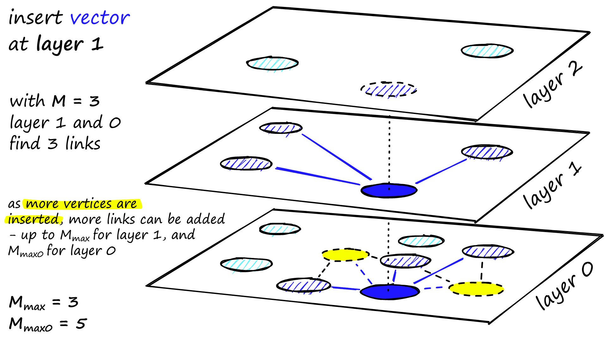
Inside SEARCH-LAYER (Algorithm 2): Two-Heap Beam Search & Detours
Why does Layer $0$ need a beam width $\text{efSearch} > 1$ even when $K = 1$? Because greedy search ($\text{ef} = 1$) refuses to step to any neighbor farther than the current node, trapping the search whenever the only path to the true nearest neighbor passes through a slightly farther bridge node.
Malkov & Yashunin's SEARCH-LAYER(q, ep, ef, l) solves this by maintaining three structures simultaneously:
- Candidate Frontier Min-Heap $C$: Discovered nodes waiting to have their outgoing edges expanded, ordered by smallest distance $d(q, c)$ first.
- Dynamic Result Max-Heap $W$: The best discovered nodes so far (up to capacity $\text{ef}$), ordered by largest distance $d(q, f)$ first so we can inspect or evict the worst retained member $f = \arg\max_{w \in W} d(q, w)$ in $O(1)$ time.
- Visited Set $V$: Node IDs already scored for query $q$, preventing duplicate distance computations.
At each iteration, we pop the closest unexpanded candidate $c$ from $C$. Search terminates immediately when $c$ is worse than the worst retained element $f \in W$:

SEARCH-LAYER trace for $q=(0,0)$ and $K=1$. With $\text{ef}=1$ or $\text{ef}=2$, bridge node $C$ ($d^2=81$) is rejected when $A$ ($d^2=64$) is expanded, returning $B$ ($d^2=49$). With $\text{ef}=3$, $W$ retains $[B:49, A:64, C:81]$, allowing $C$ to be popped and revealing the true nearest neighbor $D$ ($d^2=0.25$).Inside SELECT-NEIGHBORS-HEURISTIC (Algorithm 4): Relative Neighborhood Diversity
During index construction, when a new node $q$ searches Layer $\ell$ with beam width efConstruction, it gathers a pool of candidate neighbors. If $q$ simply wired edges to the $M$ closest candidates (Algorithm 3), two dense clusters separated by a gap would wire all $M$ edges internally within their own cluster, leaving zero cross-cluster bridges!
HNSW's Relative Neighborhood Heuristic (Algorithm 4) sorts candidates by increasing distance to $q$ and accepts a candidate $e$ into the selected neighbor set $R$ only if $e$ is closer to $q$ than to every already-selected neighbor $r \in R$:

5. Worked Numerical & Benchmark Comparison: Flat vs. IVF vs. PQ vs. HNSW
To choose the right index for a production service, we must account for both RAM footprint and Recall-vs.-Latency scaling. For $N$ vectors of dimension $d$ (float32 $= 4d$ bytes), the memory breakdown of the four major index designs is:
IndexFlatL2/IndexFlatIP: $\text{RAM} = 4Nd\text{ bytes}$.IndexIVFFlat($C$ centroids): $\text{RAM} = 4Nd + 4Cd + 8N\text{ bytes}$ (raw vectors $+$ coarse centroids $+$ 8-byte vector IDs in posting lists).IndexIVFPQ($C$ centroids, $M$ sub-quantizers of $8$ bits): $\text{RAM} = NM + 4Cd + 256 \cdot 4d + 8N\text{ bytes}$ (compressed $M$-byte codes $+$ coarse centroids $+$ PQ codebooks $+$ 8-byte IDs).IndexHNSWFlat(parameter $M$, base cap $2M$, upper cap $M$): Each node occupies Layer $0$ ($2M$ 4-byte neighbor IDs $= 8M$ bytes) plus an expected $\frac{1}{M-1}$ upper layers ($M$ 4-byte IDs $= \frac{4M}{M-1}$ bytes):$$\text{RAM}_{\text{HNSWFlat}} \approx N \cdot \left(4d + 8M + \frac{4M}{M-1}\right)\text{ bytes} \approx N(4d + 8.5M)\text{ bytes}.$$
Suppose we index $N = 10{,}000{,}000$ vectors of dimension $d = 128$ ($512\text{ bytes}$ per raw vector):
| Index Type | Key Parameters | Total RAM ($10\text{M}$ docs) | Per-Query Operations | Typical Recall@10 |
|---|---|---|---|---|
| Flat (Exact Scan) | None | $10\text{M} \times 512\text{ B} = \mathbf{5.12\text{ GB}}$ | $10{,}000{,}000$ dot products ($128$-d) | $100.0\%$ |
| IVF4096, Flat | $C=4096,\; \text{nprobe}=32$ | $5.12\text{ GB} + 80\text{ MB} = \mathbf{5.20\text{ GB}}$ | $4096 + \frac{32}{4096}(10\text{M}) = \mathbf{82{,}221}$ dot products | $\sim 95.5\%$ |
| IVF4096, PQ16 | $C=4096,\; M=16,\; \text{nprobe}=32$ | $160\text{ MB codes} + 80\text{ MB IDs} = \mathbf{240\text{ MB}}$ | $4096$ dots $+$ $78{,}125 \times 16$ LUT adds | $\sim 88.0\%$ ($96\%$ w/ re-rank) |
| HNSW32, Flat | $M=32,\; \text{efSearch}=64$ | $5.12\text{ GB} + 2.7\text{ GB graph} = \mathbf{7.82\text{ GB}}$ | $\sim \mathbf{1{,}500\text{--}3{,}000}$ dot products | $\sim \mathbf{98.5\%}$ |
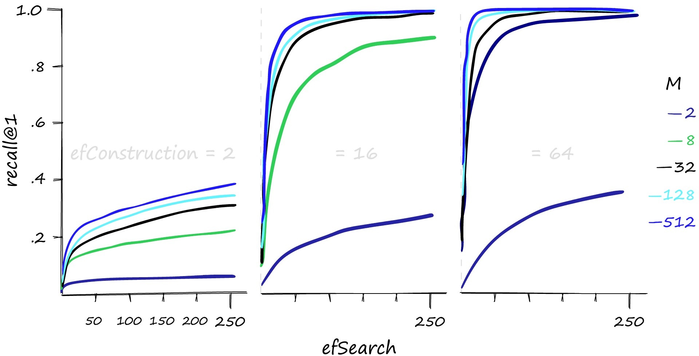
efSearch raises Recall@1 along a concave curve, while higher build-time $M$ and efConstruction lift the recall ceiling.6. Reference Python Implementation: IVF, PQ (ADC), and HNSW Search & Diversity
The self-contained script below implements all three mechanisms from scratch in NumPy/Python—IVF with residual scoring, Product Quantization with Asymmetric Distance Computation (ADC), and HNSW's two-heap search_layer + Algorithm 4 diversity selector—and verifies the worked examples from this chapter:
import heapq
import numpy as np
# 1. Product Quantization (PQ) with Asymmetric Distance Computation (ADC)
class SimpleProductQuantizer:
def __init__(self, d: int = 32, M: int = 4, K: int = 16):
assert d % M == 0
self.d, self.M, self.K = d, M, K
self.d_sub = d // M
self.codebooks = np.zeros((M, K, self.d_sub), dtype=np.float32)
def encode(self, vectors: np.ndarray) -> np.ndarray:
"""Compress [N, d] float32 vectors into [N, M] uint8 centroid codes."""
N = vectors.shape[0]
codes = np.empty((N, self.M), dtype=np.uint8)
for m in range(self.M):
sub_v = vectors[:, m * self.d_sub : (m + 1) * self.d_sub]
dists = np.sum((sub_v[:, None, :] - self.codebooks[m][None, :, :]) ** 2, axis=-1)
codes[:, m] = np.argmin(dists, axis=1).astype(np.uint8)
return codes
def adc_search(self, query: np.ndarray, codes: np.ndarray, top_k: int = 5) -> np.ndarray:
"""Score all N compressed codes using an M x K Distance Lookup Table (LUT)."""
lut = np.empty((self.M, self.K), dtype=np.float32)
for m in range(self.M):
q_sub = query[m * self.d_sub : (m + 1) * self.d_sub]
lut[m] = np.sum((self.codebooks[m] - q_sub) ** 2, axis=-1)
approx_sq_dists = sum(lut[m, codes[:, m]] for m in range(self.M))
return np.argsort(approx_sq_dists)[:top_k]
# 2. HNSW Layer Search (Algorithm 2: Candidate Min-Heap C + Retained Max-Heap W)
def hnsw_search_layer(query, vectors, graph, entry: str, ef: int):
def sq_l2(u, v):
return float(sum((a - b) ** 2 for a, b in zip(u, v)))
d_entry = sq_l2(query, vectors[entry])
C = [(d_entry, entry)] # Min-heap of pending candidates
W = [(-d_entry, entry)] # Max-heap of retained best results (capacity ef)
visited = {entry}
while C:
d_c, c = heapq.heappop(C)
d_f = -W[0][0] # Worst distance currently in W
if d_c > d_f:
break # Stopping rule: no pending node can beat cutoff
for e in graph[c]:
if e not in visited:
visited.add(e)
d_e = sq_l2(query, vectors[e])
if len(W) < ef or d_e < -W[0][0]:
heapq.heappush(C, (d_e, e))
heapq.heappush(W, (-d_e, e))
if len(W) > ef:
heapq.heappop(W)
return [node for _, node in sorted((-neg_d, node) for neg_d, node in W)]
# 3. HNSW Relative Neighborhood Diversity Heuristic (Algorithm 4)
def select_neighbors_heuristic(q, vectors, candidates, M: int):
def sq_l2(u, v):
return float(sum((a - b) ** 2 for a, b in zip(u, v)))
ordered = sorted(candidates, key=lambda cid: sq_l2(q, vectors[cid]))
R = []
for e in ordered:
if len(R) == M:
break
if all(sq_l2(q, vectors[e]) < sq_l2(vectors[r], vectors[e]) for r in R):
R.append(e)
return R
# Verify HNSW detour trace (ef=1,2 -> B; ef=3 -> D) and diversity heuristic ({a, c})
vecs = {"A": (8.0, 0.0), "B": (7.0, 0.0), "C": (9.0, 0.0), "D": (0.5, 0.0)}
adj = {"A": ("B", "C"), "B": ("A",), "C": ("A", "D"), "D": ("C",)}
assert hnsw_search_layer((0.0, 0.0), vecs, adj, "A", ef=1)[0] == "B"
assert hnsw_search_layer((0.0, 0.0), vecs, adj, "A", ef=2)[0] == "B"
assert hnsw_search_layer((0.0, 0.0), vecs, adj, "A", ef=3)[0] == "D"
div_vecs = {"a": (1.0, 0.0), "b": (1.1, 0.1), "c": (0.0, 1.2)}
assert select_neighbors_heuristic((0.0, 0.0), div_vecs, ["a", "b", "c"], M=2) == ["a", "c"]
print("Verified HNSW layer search (ef=1,2 -> B; ef=3 -> D) and diversity selection (['a', 'c'])!")7. Example HNSW Operating Curve: Recall@10 vs. Query Latency Across efSearch
In production, after building an HNSW index with fixed construction parameters (e.g., $N = 1{,}000{,}000$ vectors of dimension $d = 768$, M = 16, efConstruction = 200), you tune the query-time speed-vs.-accuracy trade-off by sweeping efSearch from its legal minimum (efSearch = k = 10) upward and plotting Recall@10 against p95 query latency:

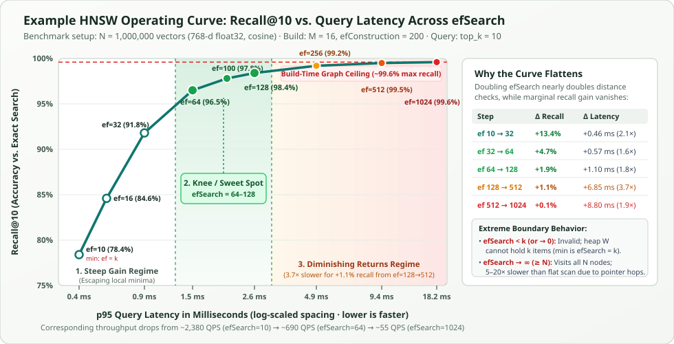
efSearch ($N = 1\text{M}$, $d = 768$, $M = 16$, $\mathrm{efConstruction} = 200$, $\text{top\_k} = 10$). Operating at the knee of the curve (efSearch = 64–128) captures $96.5\%\text{–}98.4\%$ recall in $1.45\text{–}2.55\text{ ms}$, whereas pushing past efSearch = 256 hits the build-time graph ceiling ($\approx 99.6\%$).efSearch |
Avg Layer 0 Distance Evals | Recall@10 | Marginal Gain ($\Delta$ Recall) | p50 Latency | p95 Latency | Throughput (1-Core QPS) | Operating Regime |
|---|---|---|---|---|---|---|---|
10 (min $= k$) |
$\sim 290$ vectors ($0.03\%$) | $78.4\%$ | — (baseline) | $0.31\text{ ms}$ | $0.42\text{ ms}$ | $\sim 2{,}380\text{ QPS}$ | Under-explored (premature stop) |
16 |
$\sim 430$ vectors ($0.04\%$) | $84.6\%$ | $+6.2\%$ | $0.43\text{ ms}$ | $0.58\text{ ms}$ | $\sim 1{,}720\text{ QPS}$ | Steep climb (escaping local traps) |
32 |
$\sim 740$ vectors ($0.07\%$) | $91.8\%$ | $+7.2\%$ | $0.66\text{ ms}$ | $0.88\text{ ms}$ | $\sim 1{,}135\text{ QPS}$ | Steep climb |
64 |
$\sim 1{,}320$ vectors ($0.13\%$) | $96.5\%$ | $+4.7\%$ | $1.10\text{ ms}$ | $1.45\text{ ms}$ | $\sim 690\text{ QPS}$ | Knee / Production Sweet Spot |
100 |
$\sim 1{,}910$ vectors ($0.19\%$) | $97.8\%$ | $+1.3\%$ | $1.55\text{ ms}$ | $2.05\text{ ms}$ | $\sim 485\text{ QPS}$ | Knee / Production Sweet Spot |
128 |
$\sim 2{,}420$ vectors ($0.24\%$) | $98.4\%$ | $+0.6\%$ | $1.92\text{ ms}$ | $2.55\text{ ms}$ | $\sim 392\text{ QPS}$ | Knee / High-Recall Sweet Spot |
256 |
$\sim 4{,}650$ vectors ($0.47\%$) | $99.2\%$ | $+0.8\%$ | $3.65\text{ ms}$ | $4.85\text{ ms}$ | $\sim 206\text{ QPS}$ | Diminishing returns |
512 |
$\sim 9{,}100$ vectors ($0.91\%$) | $99.5\%$ | $+0.3\%$ | $7.10\text{ ms}$ | $9.40\text{ ms}$ | $\sim 106\text{ QPS}$ | Heavy latency penalty |
1024 |
$\sim 17{,}800$ vectors ($1.78\%$) | $99.6\%$ | $+0.1\%$ | $13.80\text{ ms}$ | $18.20\text{ ms}$ | $\sim 55\text{ QPS}$ | Saturated at build-time ceiling |
| Exact Flat Scan | $1{,}000{,}000$ vectors ($100\%$) | $100.0\%$ | $+0.4\%$ | $82.00\text{ ms}$ | $85.00\text{ ms}$ | $\sim 12\text{ QPS}$ | Brute-force baseline ($O(Nd)$) |
8. Complete HNSW Parameter Reference: Directional Effects & Extreme Limits ($\to \infty$ vs. $\to 0$)
The table below summarizes every HNSW hyperparameter, what happens when you increase it, what happens if you push it toward infinity ($\to \infty$ or $N$) or shrink it toward zero ($\to 0$ or $1$), and how to set it in production:
| Parameter & Default | What Happens When You Increase It ($\uparrow$)? | Can You Increase It to $\infty$ (or $N$)? | Can You Decrease It to $0$ (or $1$)? | How to Set It in Practice |
|---|---|---|---|---|
efSearch (ef)Query-time Layer 0 heap $W$ size Default: 16–64Range: 32–256 |
Keeps the stopping bar $\max_{w \in W} d(q, w)$ looser for longer, admitting more candidates into min-heap $C$. Monotonically increases Recall@k (up to the build-time graph ceiling) and increases query latency roughly linearly with expanded nodes. Zero effect on RAM or build time. | Capped at $N$ — and counterproductive well before $N$. Because the visited set prevents scoring any vector twice, any $\mathrm{efSearch} \ge N$ behaves identically to $\mathrm{efSearch} = N$, traversing the entire connected Layer 0 graph ($N$ distance checks). However, pointer-chasing and heap operations over $N$ graph nodes are $5\times\text{–}20\times$ slower than a contiguous SIMD brute-force flat scan due to random cache misses. |
No — hard floor is $\mathrm{efSearch} \ge k$ (and $\ge 1$). At $\mathrm{efSearch} = 0$, heap $W$ has capacity $0$ and cannot store even the entry point. All engines enforce $\mathrm{efSearch} \ge k$ so $W$ can return $k$ results. At $\mathrm{efSearch} = 1$ (when $k=1$), Layer 0 degenerates into pure greedy hill-climbing, stopping at the very first local minimum. |
Always enforce $\mathrm{efSearch} \ge k$. Start at 64, sweep 16 → 512 on a validation query set, and pick the knee of the Recall-vs.-p95-latency curve (typically 64–128). |
MBidirectional links added per node per layer Default: 16Range: 12–64 |
Increases out-degree per node, raising the recall ceiling (especially in high dimensions $d \ge 768$). Graph link RAM grows linearly ($\approx 8.5 \times M$ bytes/vector), build time rises, and every expanded node during search has more neighbors to score. Also reduces hierarchy height ($\propto 1/\ln M$). | No — $M \to N$ turns Layer 0 into a dense $O(N^2)$ complete graph. Every node connects to all $N-1$ other nodes: graph RAM explodes to $O(N^2)$ integers, build time explodes to $O(N^3)$, and expanding just the Layer 0 entry point scores all $N-1$ vectors. Even $M > 128$ loses to $M = 32\text{–}64$ on QPS at equal recall. |
No — hard floor is $M \ge 2$ (practically $M \ge 4$). At $M = 0$, zero edges exist ($N$ isolated vertices; search cannot move from the entry point). At $M = 1$, the graph shatters into disconnected pairs/trees. At $M = 2\text{–}3$, high-dimensional graphs suffer from disconnected components and long routing chains. |
Use M = 16 for standard $d \le 768$ embeddings. Raise to M = 32–48 for $d \ge 1024$ or $\text{Recall}@10 > 0.99$. Use M = 8–12 only when RAM is tightly constrained. |
M_max & M_max0Max edges per node on upper layers ($M_{\max}$) and Layer 0 ($M_{\max0}$) Default: $M, 2M$ |
Allows popular “hub” nodes to accept more incoming reverse edges before triggering Algorithm 4 pruning, preventing hub bottlenecks on Layer 0 at the cost of larger fixed adjacency arrays per node. | No — disables hub pruning and causes hub degree explosion. Pre-allocated adjacency lists would exhaust RAM immediately, or central hubs would accumulate $O(N)$ edges, causing severe latency spikes whenever a query visits a hub. |
No — must satisfy $M_{\max0} \ge M$. At $M_{\max0} = 0$, no node can hold edges. If $M_{\max0} < M$, newly inserted nodes cannot even keep the $M$ bidirectional edges they just wired, causing immediate pruning thrashing. |
Keep at the standard formula $M_{\max} = M$ and $M_{\max0} = 2M$ (set automatically from M by almost all libraries). |
efConstructionBuild-time candidate heap $W$ size during insertion Default: 200Range: 100–500 |
Widens the beam search when wiring each new node into the graph so Algorithm 4 selects from true nearest/diverse neighbors. Lifts the graph’s recall ceiling and speeds up query routing with zero increase in index RAM or query latency. Only increases build time. | Capped at $N$ — build time becomes $O(N^2)$ with zero graph gain past saturation. Once efConstruction is large enough to find each node’s true local neighborhood (200–500), the chosen $M$ edges stop changing. Pushing $\mathrm{efConstruction} \to N$ turns index building into an exact all-pairs $O(N^2)$ scan for no accuracy benefit. |
No — hard floor is $\mathrm{efConstruction} \ge M$ (and $\ge 1$). At $\mathrm{efConstruction} = 0$, insertion finds no candidates. If $\mathrm{efConstruction} < M$, nodes are starved of their $M$ edge budget. At $\mathrm{efConstruction} = 1$, nodes wire only to greedy local minima, permanently ruining graph connectivity. |
Set $\mathrm{efConstruction} \ge 2M$ (typically 100–200 for $M=16$, or 200–400 for $M=32$) until build-time validation recall is $\ge 0.95$. |
m_LLevel multiplier in $\ell = \lfloor -\ln(U) \cdot m_L \rfloor$ Default: $1/\ln(M)$ |
Raises the promotion probability $e^{-1/m_L}$ of nodes reaching upper layers, creating a taller hierarchy and denser upper layers (more upper-layer RAM and more Phase 1 descent hops). | No — $m_L \to \infty$ creates an infinite tower of duplicate layers. As $m_L \to \infty$, $e^{-1/m_L} \to 1$, copying every vector into infinitely many layers and blowing up memory and descent time. |
Yes ($m_L = 0$ is valid!) — collapses HNSW into a 1-layer flat NSW graph. Every node gets $\ell = 0$, removing all upper layers (only Layer 0 remains, as in flat NSW or Vamana/DiskANN). Works well in high dimensions when $M \ge 32$, though it loses $O(\log N)$ coarse routing on low-$d$ or skewed data. |
Leave at the theoretical optimum $m_L = 1/\ln(M)$ ($\approx 0.3607$ for $M = 16$). |
Algorithm 4 HeuristicRelative Neighborhood diversity pruning & keepPrunedConnectionsDefault: ON |
Filters candidates by $d(q, e) < d(r, e)$ so edges span diverse angles and bridge separate clusters instead of clumping in one direction. keepPrunedConnections = true backfills from pruned candidates to guarantee degree $M$. |
Setting extendCandidates = true expands neighbors-of-neighbors before pruning: useful only on ultra-clustered low-dimensional manifolds, as it multiplies build-time distance checks by $O(M)$. |
Turning the heuristic OFF (Algorithm 3 naive $M$-nearest) traps all edges inside tight clusters, creating disconnected cluster islands that cause catastrophic recall failure regardless of efSearch. |
Always keep Algorithm 4 Heuristic = ON with keepPrunedConnections = true and extendCandidates = false. |
Sources & Further Reading
- Jégou, Douze, and Schmid (2011): Product Quantization for Nearest Neighbor Search, IEEE TPAMI — introduces Product Quantization, Asymmetric Distance Computation (ADC), IVF-PQ residual quantization, and the list imbalance factor $\hat{\beta}$.
- Malkov and Yashunin (2018): Efficient and Robust Approximate Nearest Neighbor Search Using Hierarchical Navigable Small World Graphs, IEEE TPAMI — Algorithms 1–5 for HNSW insertion, two-heap layer search, and relative-neighborhood diversity pruning.
- Pinecone: Hierarchical Navigable Small Worlds (HNSW), Vector Indexes (IVF), and Product Quantization — visual diagrams and SIFT1M parameter sweeps.
- RAG · ANN Methods & HNSW Series — companion deep-dive guides with interactive two-heap search labs, native FAISS/hnswlib benchmarks, and filtered RAG retrieval analysis.